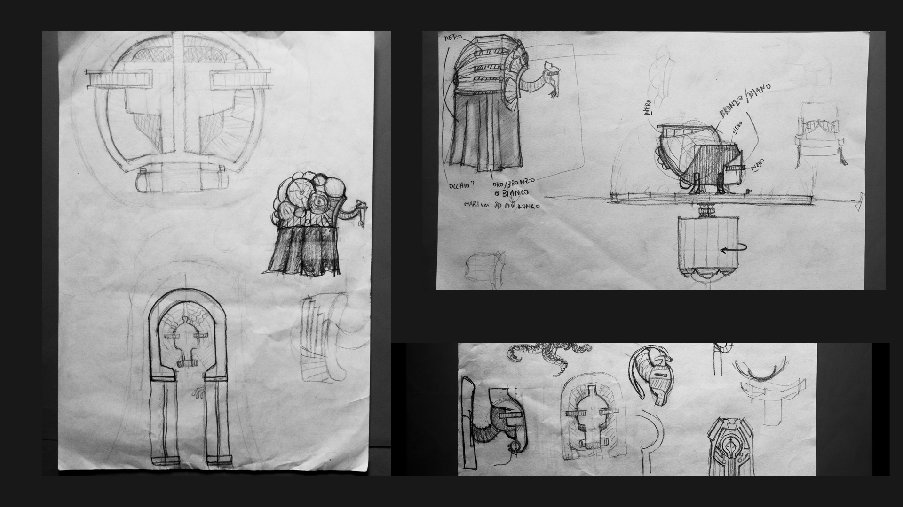
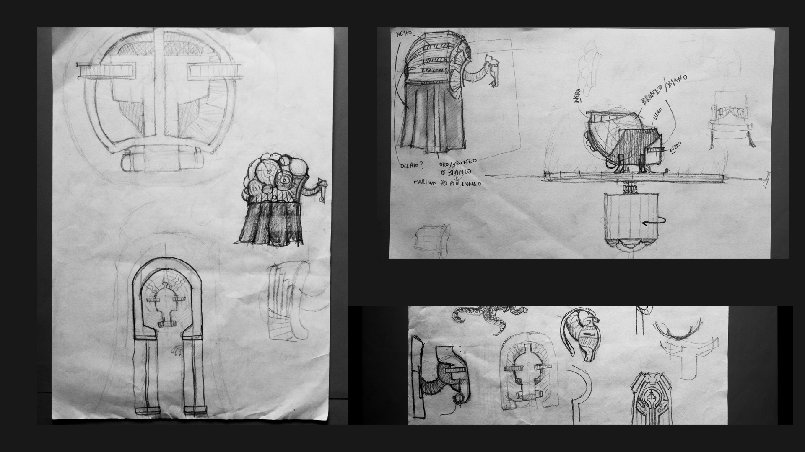

La prima cosa che ho fatto è stato modellare il personaggio, questo perchè non avendo alcuna esperienza su software 3D pensavo fosse un buon modo per incominciare a prendere confidenza con Blender 2.8.
Si, ho deciso di utilizzare la versione 2.8 beta di blender per tre motivi:
1. Con la nuova versione viene un nuovo engine Eevee. Questo comporta due vantaggi: tempi di render ridotti, e il lighting volumetrico. Parte centrale del lavoro da me svolto.
2. Avendo intenzione di imparare Blender non solo a fini universitari ma anche professionali, la nuova versione porta diverse modifiche sostanziali non solo alla UI, stabilendo un futuro nuovo standard, quindi non vedo il motivo di impare un programma che verrà presto superato.


 
